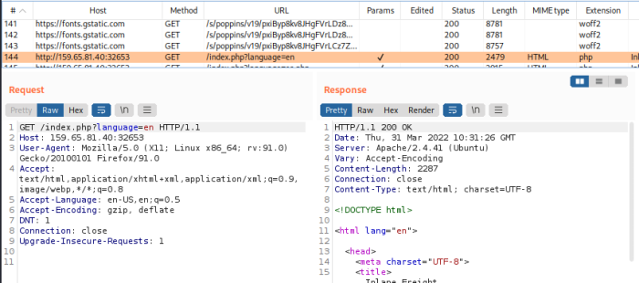

2. PHP Source Code Disclosure
Standard PHP Inclusion
When we include any php files through LFI there are some options that could happen:
◇ the included PHP file gets executed, and eventually gets rendered as a normal HTML page
▪ useful for SSRF
◇ the included PHP file gets executed, but nothing is rendered since the operations are not visible
▪ useful for SSRF
Note: sometimes we don't need to append the .php extension because is appended by web application
example PHP file: Source Code Disclosure
For LFI instead of the PHP exectuion we are more interested to reading the source code of PHP files.
Note: The same reasoning can be applied to other web application languages other than PHP, as long as the vulnerable function can execute files.
| Function | Read Content | Execute | Remote URL |
|---|
| PHP | | | |
|---|
| include()/include_once() | ✅ | ✅ | ✅ |
| require()/require_once() | ✅ | ✅ | ❌ |
| file_get_contents() | ✅ | ❌ | ✅ |
| fopen()/file() | ✅ | ❌ | ❌ |
| NodeJS | | | |
|---|
| fs.readFile() | ✅ | ❌ | ❌ |
| fs.sendFile() | ✅ | ❌ | ❌ |
| res.render() | ✅ | ✅ | ❌ |
| .NET | | | |
|---|
| @Html.Partial() | ✅ | ❌ | ❌ |
| @Html.RemotePartial() | ✅ | ❌ | ✅ |
| Response.WriteFile() | ✅ | ❌ | ❌ |
| include | ✅ | ✅ | ✅ |
Source code Disclosure through base64 encodingFor disclosing the Source code of PHP files we can use the base64 PHP filter
To read the source code of a FILE use the base64 filter
◇ for read parameter → specify convert.base64-encode
◇ for the resource parameter → config
example: php://filter/read=convert.base64-encode/resource=FILE(.php)
Note: in this example is been left the file without extension because the .php extension is appended by the WebApp
Decode Base64 string• Bash
echo 'PD9waHAK...SNIP...KICB9Ciov' | base64 -d